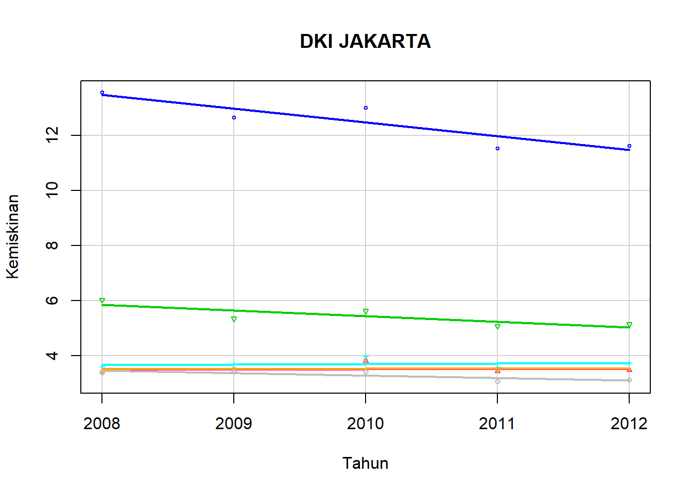
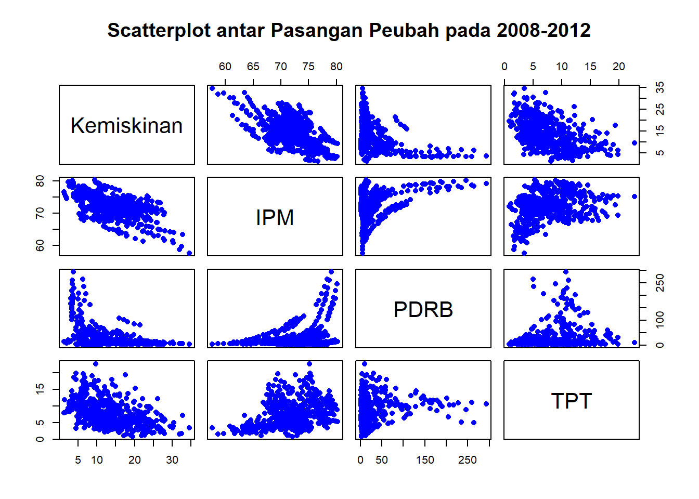
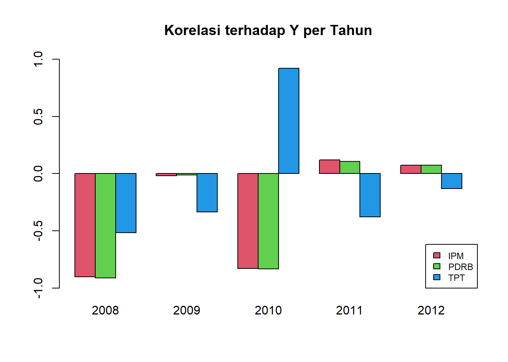
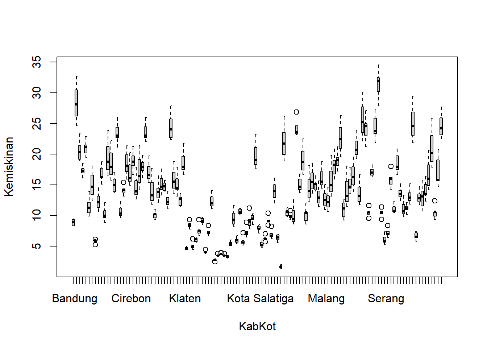
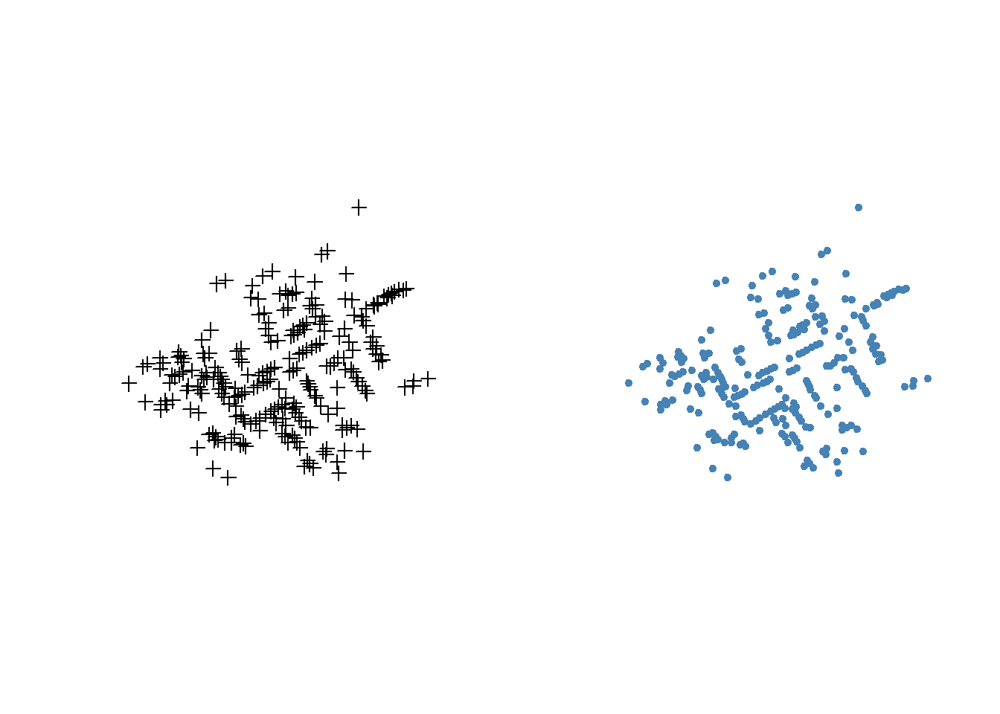

Modul 2 Pemodelan Dependensi Spasial
2.1 Model Spasial Global
/pelatihan%20spasial%20(adj)/Modul%20Pelatihan%20Spasial/gambar%202.png)
Secara umum, tahapan pemodelan regresi spasial adalah sebagai berikut:
Eksplorasi Data
Regresi Klasik & Uji Asumsi
Matriks Pembobot Spasial
Uji Lagrange Multiplier
Regresi Spasial & Uji Asumsi
Kebaikan Model
Sebagai ilustrasi untuk menjelaskan tahapan tersebut, kita akan menggunakan data kemiskinan dan kependudukan di Pulau Jawa berikut ini:
Data polygon (peta Pulau Jawa, dengan extension .shp)
Data frame (data persentase kemiskinan, PDRB, pendidikan Angka Melek Huruf, Pengeluaran perkapita, Ruta Penerima Raskin, Penduduk berusia 15-64, Harapan Lama Sekolah, dan Rata-Rata Lama Sekolah, diperoleh dari BPS)
Seperti yang telah dijelaskan pada modul sebelumnya, impor data dapat dilakukan dengan program berikut ini.
datajawa = datajawa=read.csv("Pulau Jawa.csv", header=T, sep=";")
head(datajawa)## Provinsi Kabupaten.kota Longitude Latitude Kemiskinan PDRB
## 1 DKI Jakarta Kepulauan Seribu 106.5072 -5.7985 11.98 338.80
## 2 Kota Jakarta Selatan 106.8079 -6.2627 2.83 261.58
## 3 Kota Jakarta Timur 106.8995 -6.2249 3.14 155.53
## 4 Kota Jakarta Pusat 106.8279 -6.1801 3.59 692.24
## 5 Kota Jakarta Barat 106.7633 -6.1675 3.39 168.68
## 6 Kota Jakarta Utara 106.8926 -6.1555 5.35 271.85
## Pendidikan AMH Pengeluaran.Perkapita Ruta.Penerima.Raskin Penduduk.15.64
## 1 5.29 100.00 68.80 55.34 86.2882
## 2 7.96 100.00 46.63 0.00 86.8031
## 3 2.91 100.00 50.39 0.00 86.9343
## 4 3.62 100.00 50.87 0.00 86.2032
## 5 25.02 100.00 53.29 0.00 87.4070
## 6 18.59 98.98 51.12 0.00 87.3943
## HLS Rata.Rata.Lama.Sekolah
## 1 12.48 8.46
## 2 13.31 11.57
## 3 13.43 11.64
## 4 13.23 11.24
## 5 12.78 10.38
## 6 12.61 10.69Pada ilustrasi ini, pemodelan dilakukan untuk mengkaji peubah respon persentase penduduk miskin tahun 2018 di pulau Jawa (\(Y\)) dengan menggunakan peubah persentase Pendidikan yang ditamatkan di Bawah SD Tahun 2018(\(X\)).
library(spdep)
library(rgdal)
library(raster)
petajawa<-readOGR(dsn=“directory tempat folder utk file .shp", layer=“nama file shp")2.2 Eksplorasi Data
hist(datajawa$Kemiskinan)
bxplt<-boxplot(datajawa$Kemiskinan, outlier.tagging=T)
bxplt$out## [1] 21.21 20.16subset(datajawa, datajawa$Kemiskinan>bxplt$stats[5])## Provinsi Kabupaten.kota Longitude Latitude Kemiskinan PDRB Pendidikan
## 100 Sampang 113.2394 -7.0402 21.21 19.85 50.59
## 102 Sumenep 113.9061 -6.9254 20.16 30.17 49.17
## AMH Pengeluaran.Perkapita Ruta.Penerima.Raskin Penduduk.15.64 HLS
## 100 88.94 69.82 67.89 66.5778 11.76
## 102 85.90 64.05 78.71 71.6376 13.07
## Rata.Rata.Lama.Sekolah
## 100 4.36
## 102 5.23plot(datajawa$Pendidikan, datajawa$Kemiskinan,
xlab="Persentase Pendidikan yang ditamatkan di bawah SD Thn.2018",
ylab="Persentase Penduduk Miskin Thn.2018",
pch=20, col="orange", cex=2)
Plot tersebut memperlihatkan adanya pola hubungan linear positif antara persentase pendidikan yang ditamatkan di bawah SD terhadap persentase penduduk miskin di Pulau Jawa pada tahun 2018.
petajawa$Kemiskinan<- datajawa$Kemiskinan
k=16
colfunc <- colorRampPalette(c("green", "yellow","red"))
color <- colfunc(k)
spplot(petajawa, "Kemiskinan", col.regions=color, main="Persentase Penduduk Miskin Tahun 2018")
Berdasarkan plot di atas, dapat dilihat adanya kecenderungan pola bergerombol pada data persentase kemiskinan di kabupaten/kota di Pulau Jawa. Hal ini tampak dari gradasi warna yang cenderung mengumpul, seperti pada warna hijau, merah dan oranye.
2.2.1 Identifikasi Autokorelasi pada Data
w<-poly2nb(petajawa)
ww<-nb2listw(w, zero.policy=T)
moran(datajawa$Kemiskinan, ww, n=length(ww$neighbours),
S0=Szero(ww), zero.policy=T)## $I
## [1] 0.5214426
##
## $K
## [1] 2.853193moran.test(datajawa$Kemiskinan, ww,randomisation=T,
alternative="greater", zero.policy=T)##
## Moran I test under randomisation
##
## data: datajawa$Kemiskinan
## weights: ww n reduced by no-neighbour observations
##
##
## Moran I statistic standard deviate = 7.7638, p-value = 4.12e-15
## alternative hypothesis: greater
## sample estimates:
## Moran I statistic Expectation Variance
## 0.517060772 -0.008547009 0.004583226moran.plot(datajawa$Kemiskinan, ww, labels=petajawa$KABKOT, zero.policy=T)
2.3 Pemodelan Regresi Klasik
Pemodelan regresi dapat dilakukan menggunakan fungsi lm berikut.
reg.klasik = lm(Kemiskinan~Pendidikan, data = datajawa)
err.regklasik<-residuals(reg.klasik)
summary(reg.klasik)##
## Call:
## lm(formula = Kemiskinan ~ Pendidikan, data = datajawa)
##
## Residuals:
## Min 1Q Median 3Q Max
## -9.3117 -2.6659 -0.3763 2.2998 8.8844
##
## Coefficients:
## Estimate Std. Error t value Pr(>|t|)
## (Intercept) 4.50549 0.89314 5.045 1.68e-06 ***
## Pendidikan 0.18965 0.03066 6.186 9.37e-09 ***
## ---
## Signif. codes: 0 '***' 0.001 '**' 0.01 '*' 0.05 '.' 0.1 ' ' 1
##
## Residual standard error: 3.671 on 117 degrees of freedom
## Multiple R-squared: 0.2464, Adjusted R-squared: 0.24
## F-statistic: 38.26 on 1 and 117 DF, p-value: 9.373e-09cor(datajawa$Kemiskinan, fitted(reg.klasik))^2## [1] 0.24644082.4 Diagnostik Model
2.4.1 Kenormalan Sisaan
library(nortest)
library(car)
library(DescTools)
library(lmtest)
shapiro.test(err.regklasik)##
## Shapiro-Wilk normality test
##
## data: err.regklasik
## W = 0.98607, p-value = 0.2608par(mfrow=c(1,2))
hist(err.regklasik)
car::qqPlot(residuals(reg.klasik))
## [1] 119 69H0: galat model menyebar normal
H1: galat model tidak menyebar normal
2.4.2 Kehomogenan Ragam Sisaan
plot(fitted(reg.klasik), residuals(reg.klasik))
bptest(reg.klasik)##
## studentized Breusch-Pagan test
##
## data: reg.klasik
## BP = 3.979, df = 1, p-value = 0.04607H0: ragam galat homogen
H1: ragam galat tidak homogen
2.4.3 Kebebasan Sisaan
Uji kebebasan sisaan pada data spasial dapat dilakukan dengan uji moran menggunakan fungsi berikut.
w<-poly2nb(petajawa)
ww<-nb2listw(w, zero.policy =T)
lm.morantest(reg.klasik, ww, alternative="two.sided", zero.policy = T)##
## Global Moran I for regression residuals
##
## data:
## model: lm(formula = Kemiskinan ~ Pendidikan, data = datajawa)
## weights: ww
##
## Moran I statistic standard deviate = 5.3932, p-value = 6.922e-08
## alternative hypothesis: two.sided
## sample estimates:
## Observed Moran I Expectation Variance
## 0.351747300 -0.011502703 0.004536512Selain menggunakan fungsi lm.morantest, uji moran dapat dilakukan menggunakan fungsi moran.test seperti yang dibahas pada modul pertemuan sebelumnya. Perbedaannya adalah pada fungsi pertama, input yang digunakan adalah objek lm, sedangkan pada fungsi kedua, yang digunakan sebagai input adalah data sisaan model.
moran.test(err.regklasik, ww,randomisation=F, alternative="two.sided", zero.policy=T)##
## Moran I test under normality
##
## data: err.regklasik
## weights: ww n reduced by no-neighbour observations
##
##
## Moran I statistic standard deviate = 5.3242, p-value = 1.014e-07
## alternative hypothesis: two.sided
## sample estimates:
## Moran I statistic Expectation Variance
## 0.351747300 -0.008547009 0.004579345Terlihat pada output bahwa hasil kedua tes menunjukkan kesimpulan yang sama, yaitu tolak H0 yang menyatakan bahwa tidak terdapat autokorelasi pada sisaan model regresi klasik pada taraf nyata 5%. Oleh karenanya, untuk mencari model yang lebih baik, kita dapat melakukan uji LM (lagrange multiplier) untuk mengidentifikasi model dependensi spasial yang dapat digunakan pada kasus ini.
2.5 Uji Lagrange Multiplier
LM<-lm.LMtests(reg.klasik, nb2listw(w, style="W", zero.policy=T),
test=c("LMerr", "LMlag","RLMerr","RLMlag","SARMA"), zero.policy=T)
summary(LM)## Lagrange multiplier diagnostics for spatial dependence
## data:
## model: lm(formula = Kemiskinan ~ Pendidikan, data = datajawa)
## weights: nb2listw(w, style = "W", zero.policy = T)
##
## statistic parameter p.value
## LMerr 26.4886 1 2.651e-07 ***
## LMlag 27.2100 1 1.825e-07 ***
## RLMerr 1.4217 1 0.2331
## RLMlag 2.1431 1 0.1432
## SARMA 28.6317 2 6.063e-07 ***
## ---
## Signif. codes: 0 '***' 0.001 '**' 0.01 '*' 0.05 '.' 0.1 ' ' 1Output memperlihatkan bahwa hasil uji model SEM dan SAR sama-sama signifikan pada taraf 5%. Selanjutnya, hasil uji robust keduanya ternyata sama-sama tidak signifikan. Berdasarkan skema tersebut, kita dapat mencoba kandidat model SARMA atau GSM. Namun demikian, ada pula pendapat yang menyarankan agar kita mengambil kandidat model dengan p-value terkecil, pada kasus ini p-value terkecil juga terdapat pada model SARMA atau GSM.
Mohon diingat bahwa pada ilustrasi yang kita lakukan saat ini, kita hanya menggunakan satu peubah bebas sehingga kita tidak perlu mengkhawatirkan masalah multikolinieritas. Pada saat Anda memiliki lebih dari satu peubah bebas, pastikan Anda juga memperhatikan multikolinieritas pada model. Pemeriksaan dapat dilakukan dengan fungsi vif() pada package car.
2.6 Pemodelan Regresi Spasial
Pada modul ini, untuk kepentingan pembelajaran, kita akan mencoba ketiga model, SEM, SAR, dan SARMA, meskipun pada prakteknya, Anda hanya perlu memodelkan yang menurut Anda terbaik saja.
w<-poly2nb(petajawa)
ww<-nb2listw(w, zero.policy=T)2.6.1 Model SEM
library(spatialreg)
sem<-errorsarlm(Kemiskinan~Pendidikan,data=datajawa,ww, zero.policy=T)
summary(sem)##
## Call:errorsarlm(formula = Kemiskinan ~ Pendidikan, data = datajawa,
## listw = ww, zero.policy = T)
##
## Residuals:
## Min 1Q Median 3Q Max
## -7.04950 -1.86484 -0.43797 1.87675 8.14992
##
## Type: error
## Regions with no neighbours included:
## 0
## Coefficients: (asymptotic standard errors)
## Estimate Std. Error z value Pr(>|z|)
## (Intercept) 6.359121 0.958495 6.6345 3.256e-11
## Pendidikan 0.114932 0.029332 3.9183 8.918e-05
##
## Lambda: 0.57487, LR test value: 29.606, p-value: 5.2937e-08
## Asymptotic standard error: 0.083992
## z-value: 6.8443, p-value: 7.6856e-12
## Wald statistic: 46.844, p-value: 7.6857e-12
##
## Log likelihood: -307.7876 for error model
## ML residual variance (sigma squared): 9.4425, (sigma: 3.0729)
## Number of observations: 119
## Number of parameters estimated: 4
## AIC: 623.58, (AIC for lm: 651.18)pseudoR2.sem<-cor(datajawa$Kemiskinan, fitted(sem))^2
pseudoR2.sem## [1] 0.4786585Output di atas menunjukkan bahwa koefisien Lambda signifikan pada taraf nyata 5% ( p-value = 5.2937e-08 ). AIC model SEM adalah sebesar 623.58, dengan pseudo-\(R^2=0.4787\) Selanjutnya kita akan coba memeriksa sisaan model SEM ini.
library(nortest)
err.sem<-residuals(sem)
shapiro.test(err.sem)##
## Shapiro-Wilk normality test
##
## data: err.sem
## W = 0.98234, p-value = 0.1208bptest.sarlm(sem)##
## studentized Breusch-Pagan test
##
## data:
## BP = 4.1883, df = 1, p-value = 0.0407moran.test(err.sem, ww, alternative="two.sided", zero.policy=T)##
## Moran I test under randomisation
##
## data: err.sem
## weights: ww n reduced by no-neighbour observations
##
##
## Moran I statistic standard deviate = -0.53535, p-value = 0.5924
## alternative hypothesis: two.sided
## sample estimates:
## Moran I statistic Expectation Variance
## -0.044773446 -0.008547009 0.004579087Terlihat pada output di atas bahwa sisaan memenuhi asumsi kenormalan dan asumsi kebebasan.
2.6.2 Model SAR
sar<-lagsarlm(Kemiskinan~Pendidikan,data=datajawa,ww, zero.policy=T)
summary(sar)##
## Call:lagsarlm(formula = Kemiskinan ~ Pendidikan, data = datajawa,
## listw = ww, zero.policy = T)
##
## Residuals:
## Min 1Q Median 3Q Max
## -7.17361 -1.97250 -0.56646 1.82449 9.57815
##
## Type: lag
## Regions with no neighbours included:
## 0
## Coefficients: (asymptotic standard errors)
## Estimate Std. Error z value Pr(>|z|)
## (Intercept) 1.779095 0.992235 1.7930 0.07297
## Pendidikan 0.117724 0.027717 4.2473 2.164e-05
##
## Rho: 0.46783, LR test value: 25.624, p-value: 4.1491e-07
## Asymptotic standard error: 0.087013
## z-value: 5.3766, p-value: 7.5901e-08
## Wald statistic: 28.908, p-value: 7.5901e-08
##
## Log likelihood: -309.7788 for lag model
## ML residual variance (sigma squared): 10.098, (sigma: 3.1777)
## Number of observations: 119
## Number of parameters estimated: 4
## AIC: 627.56, (AIC for lm: 651.18)
## LM test for residual autocorrelation
## test value: 0.014268, p-value: 0.90492pseudoR2.sar<-cor(datajawa$Kemiskinan, fitted(sar))^2
pseudoR2.sar## [1] 0.4292466Output di atas memperlihatkan bahwa koefisien Rho pada model SAR signifikan, dengan nilai AIC sebesar 627.56 dengan pseudo-\(R^2=0.4292\) . Selain itu, terlihat pula hasil uji autokorelasi pada sisaan model memperlihatkan nilai p-value sebesar 0.90492, artinya tidak terdapat autokorelasi pada sisaan.
err.sar<-residuals(sar)
shapiro.test(err.sar)##
## Shapiro-Wilk normality test
##
## data: err.sar
## W = 0.98005, p-value = 0.07421bptest.sarlm(sar)##
## studentized Breusch-Pagan test
##
## data:
## BP = 1.6725, df = 1, p-value = 0.1959moran.test(err.sar, ww, alternative="two.sided", zero.policy=T)##
## Moran I test under randomisation
##
## data: err.sar
## weights: ww n reduced by no-neighbour observations
##
##
## Moran I statistic standard deviate = 0.18303, p-value = 0.8548
## alternative hypothesis: two.sided
## sample estimates:
## Moran I statistic Expectation Variance
## 0.003823646 -0.008547009 0.004567919Berdasarkan output di atas, pada taraf 5% dapat disimpulkan bahwa sisaan model memenuhi asumsi kenormalan, kehomogenan ragam, dan kebebasan.
2.6.3 Model GSM/SARMA
gsm<-sacsarlm(Kemiskinan~Pendidikan,data=datajawa,ww, zero.policy=T)
summary(gsm)##
## Call:sacsarlm(formula = Kemiskinan ~ Pendidikan, data = datajawa,
## listw = ww, zero.policy = T)
##
## Residuals:
## Min 1Q Median 3Q Max
## -6.20932 -1.69855 -0.38001 1.70634 7.26252
##
## Type: sac
## Coefficients: (asymptotic standard errors)
## Estimate Std. Error z value Pr(>|z|)
## (Intercept) 10.338070 1.750226 5.9067 3.49e-09
## Pendidikan 0.099813 0.027137 3.6781 0.000235
##
## Rho: -0.43058
## Asymptotic standard error: 0.14723
## z-value: -2.9246, p-value: 0.0034494
## Lambda: 0.79882
## Asymptotic standard error: 0.069513
## z-value: 11.492, p-value: < 2.22e-16
##
## LR test value: 34.317, p-value: 3.5325e-08
##
## Log likelihood: -305.432 for sac model
## ML residual variance (sigma squared): 7.7401, (sigma: 2.7821)
## Number of observations: 119
## Number of parameters estimated: 5
## AIC: 620.86, (AIC for lm: 651.18)pseudoR2.gsm<-cor(datajawa$Kemiskinan, fitted(gsm))^2
pseudoR2.gsm## [1] 0.5933811Output di atas memperlihatkan bahwa kedua koefisien dependensi spasial, Rho dan Lambda signifikan. AIC model SARMA adalah sebesar 620.86 dengan pseudo-\(R^2=0.5934\)
err.gsm<-residuals(gsm)
shapiro.test(err.gsm)##
## Shapiro-Wilk normality test
##
## data: err.gsm
## W = 0.98527, p-value = 0.2219bptest.sarlm(gsm)##
## studentized Breusch-Pagan test
##
## data:
## BP = 2.3236, df = 1, p-value = 0.1274moran.test(err.gsm, ww, alternative="two.sided", zero.policy=T)##
## Moran I test under randomisation
##
## data: err.gsm
## weights: ww n reduced by no-neighbour observations
##
##
## Moran I statistic standard deviate = -0.17988, p-value = 0.8572
## alternative hypothesis: two.sided
## sample estimates:
## Moran I statistic Expectation Variance
## -0.020720135 -0.008547009 0.004579838Berdasarkan output di atas, terlihat bahwa sisaan model SARMA telah memenuhi asumsi kenormalan, kehomogenan ragam, dan kebebasan.
2.6.4 Penentuan Model Terbaik
Akhirnya, kita akan coba merangkum hasil pemodelan yang telah dilakukan sepanjang ilustrasi pada modul ini.
| Rincian | OLS | SEM | SAR | SARMA |
|---|---|---|---|---|
| AIC | 651.180 | 623.580 | 627.560 | 620.860 |
| pseudo-R2 | 0.246 | 0.479 | 0.429 | 0.593 |
| p-value of Rho | NA | NA | 0.000 | 0.000 |
| p-value of Lambda | NA | 0.000 | NA | 0.003 |
| Kenormalan(p-value) | 0.261 | 0.121 | 0.074 | 0.222 |
| Homoskedastisitas (p-value) | 0.046 | 0.041 | 0.196 | 0.127 |
| Kebebasan Sisaan(p-value) | 0.000 | 0.592 | 0.855 | 0.857 |
Ilustrasi pada kasus ini memperlihatkan bahwa ternyata GSM merupakan model terbaik berdasarkan nilai AIC dan pseudo-\(R^2\). Hal ini ternyata konsisten dengan p-value nya yang juga terkecil pada uji-LM.
2.7 Efek Marginal
Efek marginal atau limpahan (spill-over) adalah besarnya dampak perubahan pada peubah dependen pada wilayah-\(i\), akibat perubahan prediktor di wilayah-\(j\).
Efek marginal terdapat pada model dependensi spasial SAR, GSM, SDM, SDEM, dan SLX. Efek ini dapat dibedakan menjadi tiga, yaitu efek langsung (direct effect), efek tidak langsung (indirect effect), dan efek total (total effect).
impacts(gsm, listw=ww)## Impact measures (sac, exact):
## Direct Indirect Total
## Pendidikan 0.1038916 -0.03386839 0.07002321Output di atas menunjukkan bahwa pertambahan satu satuan pada pendidikan di suatu wilayah akan diikuti oleh peningkatan kemiskinan di wilayah tersebut sebesar rata-rata 0.1938916 (pengaruh langsung), sedangkan pada wilayah tetangganya akan mengalami penurunan kemiskinan rata-rata sebesar 0.03386839 (pengaruh tak langsung).
2.8 Latihan
Sebagai latihan, silahkan lakukan pemodelan menggunakan data Kemiskinan di Pulau Jawa dengan peubah bebas ruta penerima raskin dan persentase pendidikan yang ditamatkan di bawah SD.
periksa multikolineritas antar peubah bebas yang digunakan berdasarkan VIF
eksplorasi autokorelasi spasial pada model menggunakan jarak
W_distlakukan pemodelan yang menurut Anda paling tepat, interpretasikan.
2.9 Sumber Pustaka
Guliyev, H. (2020). Determining the spatial effects of COVID-19 using the spatial panel data model. Spatial Statistics, 100443. doi:10.1016/j.spasta.2020.100443. Retrieved from: https://www.ncbi.nlm.nih.gov/pmc/articles/PMC7139267/
Sarmiento-Barbieri, I. (2016, April 24). An introduction to spatial econometrics in R. Spatial Econometric Workshop, University of Illinois. Retrieved from: https://www.econ.uiuc.edu/~lab/workshop/Spatial_in_R.html#modeling-spatial-dependence
Zhukov, Y. M. (2010, January 19). Applied Spatial Statistics in R, Section 6, Spatial Regression [PDF slides.]. IQSS, Harvard University. Retrieved from: http://www.people.fas.harvard.edu/~zhukov/Spatial6.pdf